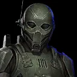
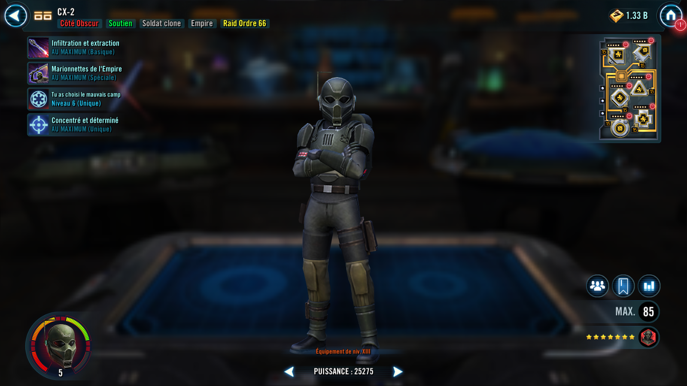
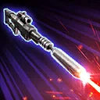
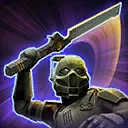
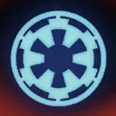

CX-2
A support character, operating from the shadows to empower his fellow Dark Side Clones

A support character, operating from the shadows to empower his fellow Dark Side Clones


Deal Physical damage and inflict Speed Down on target enemy for 2 turns.
On CX-2's turn, if the target enemy has Order 66, Empire allies gain 10% Turn Meter and recover 10% Health. If CX-2 was Stealthed, recover an additional 10% Health. CX-2 Stealths for 1 turn.

Deal Physical damage and inflict Disarm for 2 turns or until CX-2 is defeated and remove it from all other enemies, which can't be copied, dispelled, evaded, or resisted. Inflict target enemy with Vulnerable for 2 turns.
Empire allies gain bonuses based on their roles, and if there is an active Lord Vader ally, he gains all of these bonuses:
- Attackers: Gain Offense Up for 2 turns
- Healers and Supports: Gain Speed Up for 2 turns
- Tanks: Gain 30% bonus Protection for 2 turns

Whenever an enemy dispels a debuff, all Empire allies gain 10% bonus Protection until the end of the encounter.
At the start of battle, if CC-1119 "Appo" is an ally, all Empire allies can ignore taunt effects to target enemies inflicted with Order 66 and gain Instant Defeat Immunity until the end of battle or CX-2 is defeated, which can't be copied, dispelled or prevented. If all allies gained Dramatic Entrance at the start of encounter, all allies gain Dramatic Entrance for 2 turns whenever an enemy unit is defeated.
Omicron Boost : While in 3v3 Grand Arenas: Empire allies gain 100% Max Health.
If all allies at the start of battle are Dark Side Clone Troopers and/or Lord Vader, all allies gain 50% Offense, and the first time they fall below 50% Health, they recover 100% Health and gain 30% bonus Protection for 2 turns.
Whenever any stacks of Damage Over Time are dispelled on the enemy, they gain a stack of Damage Over Time, which can't be dispelled, evaded, or resisted, until the end of battle.
If CC-1119 "Appo" is active, CX-2 is immune to taunt effects and can't be targeted during enemy turns.
At the start of battle, CX-2 gains 10% Max Health and Offense for each other Empire ally. At the start of each encounter, CX-2 Stealths for 2 turns.
While another Empire ally is active, CX-2 ignores taunt effects on his turn.
Whenever CX-2 uses an ability against the same targeted enemy that he did in the previous turn, he gains 50% Critical Chance and Potency (stacking, max 100%) and all Empire allies recover 15% Health and Protection until he uses an ability on his turn against a different target.
Whenever CX-2 uses an ability against the same targeted enemy 3 times in a row, inflict Order 66 on that enemy for 2 turns, which can't be copied, dispelled, evaded or resisted. If all allies at the start of battle are Dark Side Clone Troopers and/or Lord Vader, Lord Vader gains 25% Ultimate Charge whenever an enemy is inflicted with Order 66.